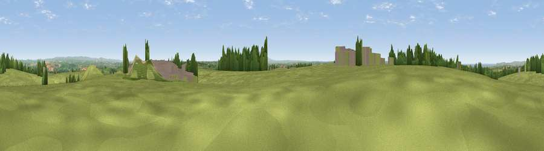

Viewpoint near High Bullen
#13881 in England · top 26% of its area beats it · near High BullenThe view, rendered

A 360° render of this exact spot computed from the terrain model, tree cover and land cover — summer colours, afternoon light, calibrated against photographs of famous viewpoints. Real trees, hedges and buildings will differ in detail.
The panorama
Grey silhouette: terrain skyline in each direction (720 bearings, Earth curvature and refraction included). Dashed green: skyline with trees (+15 m) and buildings (+8 m) as obstacles. Blue strip: how far the ground is visible on each bearing.
Where the view opens
Wedge length = distance to the farthest visible ground on that bearing (vegetation-aware). Rings at 10, 25 and 50 km.
What fills the view
80% grassland · 8% cropland · 7% woodland · 4% built-up ·
Angular shares of the visible panorama (visual magnitude), not map area. Landscape diversity 0.33 (0–1 Shannon).
Key numbers
More beautiful places nearby
The staircase of upgrades: each row has a higher view potential than everything closer. Driving times are estimates from straight-line distance, calibrated against real road routing — check an actual route before setting out.
| Place | Direction | Drive | Score |
|---|---|---|---|
| Viewpoint near High Bullen | SW · 1 km | ~3 min | 71.2 |
| Viewpoint near Alverdiscott | NW · 5 km | ~11 min | 71.7 |
| Viewpoint near Bideford | WNW · 7 km | ~14 min | 73.5 |
| Viewpoint near Bishop's Tawton | NNE · 9 km | ~17 min | 73.8 |
| Codden Hill | NNE · 9 km | ~18 min | 81.3 |
| Viewpoint near Parkham | W · 15 km | ~27 min | 81.7 |
| Viewpoint near Bucks Mills | W · 16 km | ~28 min | 84.0 |
| Viewpoint near Woolacombe | NNW · 21 km | ~35 min | 84.7 |
50.97980, -4.09079 · source: screening · position refined by local search. Computed location — check access rights before visiting.